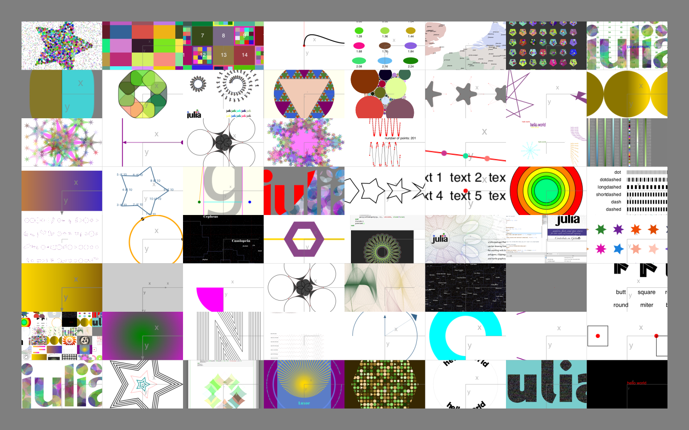
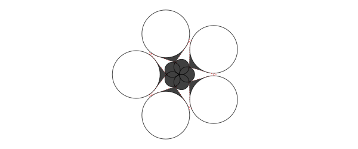
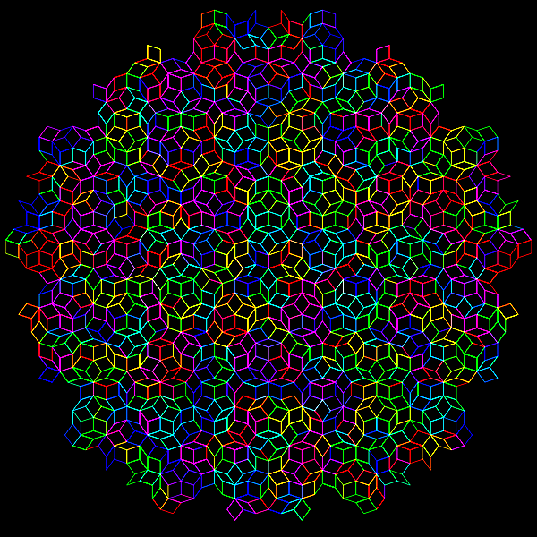
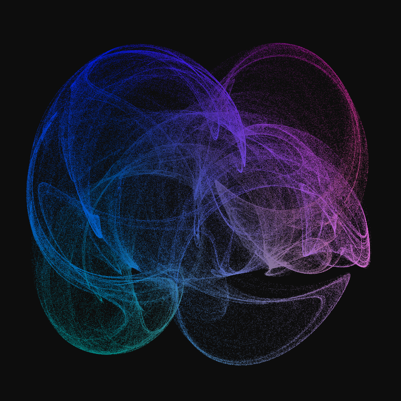
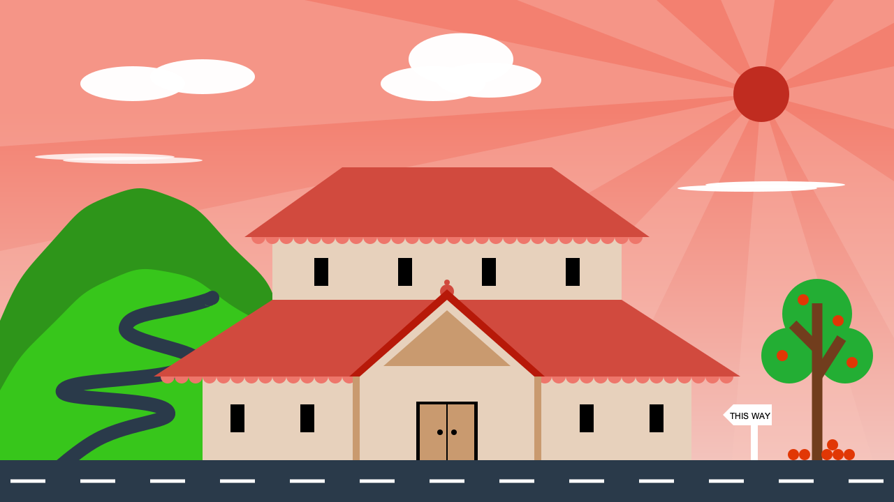

More examples
One place to look for examples is the Luxor/test directory.

Illustrating this document
This documentation was built with Documenter.jl, which is an amazingly powerful and flexible documentation generator written in Julia. The illustrations are mostly created when the HTML pages are built: the Julia source for the image is stored in the Markdown source document, and the code to create the images runs each time the documentation is generated.
The Markdown markup looks like this:
```@example
using Luxor, Random # hide
Drawing(600, 250, "../assets/figures/polysmooth-pathological.png") # hide
origin() # hide
background("white") # hide
setopacity(0.75) # hide
Random.seed!(42) # hide
setline(1) # hide
p = star(O, 60, 5, 0.35, 0, vertices=true)
setdash("dot")
sethue("red")
prettypoly(p, close=true, :stroke)
setdash("solid")
sethue("black")
polysmooth(p, 40, :fill, debug=true)
finish() # hide
```
and after you run Documenter's build process the HTML output looks like this:
p = star(O, 60, 5, 0.35, 0, vertices=true)
setdash("dot")
sethue("red")
prettypoly(p, close=true, :stroke)
setdash("solid")
sethue("black")
polysmooth(p, 40, :fill, debug=true)
Why turtles?
An interesting application for turtle-style graphics is for drawing Lindenmayer systems (l-systems). Here's an example of how a complex pattern can emerge from a simple set of rules, taken from Lindenmayer.jl:

The definition of this figure is:
penrose = LSystem(Dict("X" => "PM++QM----YM[-PM----XM]++t",
"Y" => "+PM--QM[---XM--YM]+t",
"P" => "-XM++YM[+++PM++QM]-t",
"Q" => "--PM++++XM[+QM++++YM]--YMt",
"M" => "F",
"F" => ""),
"1[Y]++[Y]++[Y]++[Y]++[Y]")where some of the characters—eg "F", "+", "-", and "t"—issue turtle control commands, and others—"X,", "Y", "P", and "Q"—refer to specific components of the design. The execution of the l-system involves replacing every occurrence in the drawing code of every dictionary key with the matching values.
Strange
It's usually better to draw fractals and similar images using pixels and image processing tools. But just for fun it's an interesting experiment to render a strange attractor image using vector drawing rather than placing pixels.
using Luxor, Colors
function strange(dotsize, w=800.0)
xmin = -2.0; xmax = 2.0; ymin= -2.0; ymax = 2.0
Drawing(w, w, "../assets/figures/strange-vector.png")
origin()
background("grey5")
xinc = w / (xmax - xmin)
yinc = w / (ymax - ymin)
# control parameters
a = 2.24
b = 0.43
c = -0.65
d = -2.43
e1 = 1.0
x = y = z = 0.0
wover2 = w / 2 - 50 # margin
for j = 1:w
for i = 1:w
xx = sin(a * y) - z * cos(b * x)
yy = z * sin(c * x) - cos(d * y)
zz = e1 * sin(x)
x = xx
y = yy
z = zz
if xx < xmax && xx > xmin
if yy < ymax && yy > ymin
xpos = rescale(
xx,
xmin,
xmax,
-wover2,
wover2,
) # scale to range
ypos = rescale(
yy,
ymin,
ymax,
-wover2,
wover2,
) # scale to range
rcolor = rescale(xx, -1, 1, 0.0, 0.6)
gcolor = rescale(yy, -1, 1, 0.2, 0.5)
bcolor = rescale(zz, -1, 1, 0.6, 0.9)
setcolor(rcolor, gcolor, bcolor)
move(Point(xpos, ypos))
line(Point(xpos + dotsize, ypos))
line(Point(
xpos + dotsize,
ypos + dotsize,
))
line(Point(xpos, ypos + dotsize))
fillpath()
end
end
end
end
finish()
end
strange(.5, 800)
This example generates about 650,000 paths, which is why it’s better to target PNG rather than SVG or PDF for this example. Also for speed, the “dots” are actually simple paths, which are slightly quicker to draw than circles or polygons.
More animations
Most of the animations on this YouTube channel are made with Luxor.
The Luxor logo
using Luxor, Colors
function set_gold_blend()
gblend = blend(O, 0, O, 250, "gold2", "gold3")
setblend(gblend)
end
function draw_scarab_legs(pos)
translate(pos)
# legs
@layer begin
for i in 1:2
move(O)
rline.((polar(80, -π/6),
polar(70, -π/2),
polar(12, -5π/6),
polar(60, -π/4)))
#middle leg
move(0, 40)
rline.((
polar(120, -π/6),
polar(40, π/2)))
#back leg
move(0, 100)
rline.((
polar(130, -π/6),
polar(110, π/2)))
# flip for other leg
transform([-1 0 0 1 0 0])
end
end
end
function draw_scarab_body()
@layer begin
squircle(Point(0, -25), 26, 75, action=:path)
squircle(Point(0, 0), 50, 70, action=:path)
squircle(Point(0, 40), 65, 90, action=:path)
end
end
function draw()
@drawsvg begin
setopacity(1.0)
setline(20)
setlinecap("butt")
setlinejoin("round")
width = 180
height= 240
sethue("black")
squircle(O, width, height-5, rt=0.4, action=:fill)
set_gold_blend()
squircle(O, width, height-5, rt=0.4, action=:path)
translate(0, 50)
draw_scarab_legs(O)
strokepath()
draw_scarab_body()
fillpath()
# julia dots === Ra egyptian sun deity
@layer begin
translate(0, -190)
circle(O, 48, action=:fill)
juliacircles(20)
end
clipreset()
end
end
draw()">
<stop offset="0" style="stop-color:rgb(93.333333%25,78.823529%25,0%25);stop-opacity:1;"/>
<stop offset="1" style="stop-color:rgb(80.392157%25,67.843137%25,0%25);stop-opacity:1;"/>
</radialGradient>
<radialGradient id="radial1" gradientUnits="userSpaceOnUse" cx="0" cy="0" fx="0" fy="0" r="250" gradientTransform="matrix(1,0,0,1,300,300)">
<stop offset="0" style="stop-color:rgb(93.333333%25,78.823529%25,0%25);stop-opacity:1;"/>
<stop offset="1" style="stop-color:rgb(80.392157%25,67.843137%25,0%25);stop-opacity:1;"/>
</radialGradient>
<radialGradient id="radial2" gradientUnits="userSpaceOnUse" cx="0" cy="0" fx="0" fy="0" r="250" gradientTransform="matrix(1,0,0,1,300,300)">
<stop offset="0" style="stop-color:rgb(93.333333%25,78.823529%25,0%25);stop-opacity:1;"/>
<stop offset="1" style="stop-color:rgb(80.392157%25,67.843137%25,0%25);stop-opacity:1;"/>
</radialGradient>
</defs>
<g id="surface24">
<path style=" stroke:none;fill-rule:nonzero;fill:rgb(0%25,0%25,0%25);fill-opacity:1;" d="M 480 300 L 479.777344 384.902344 L 479.109375 411.890625 L 477.992188 431.324219 L 476.421875 446.914062 L 474.390625 460.03125 L 471.878906 471.351562 L 468.878906 481.261719 L 465.371094 490 L 461.320312 497.734375 L 456.699219 504.578125 L 451.457031 510.613281 L 445.53125 515.898438 L 438.835938 520.484375 L 431.246094 524.398438 L 422.578125 527.675781 L 412.527344 530.328125 L 400.589844 532.382812 L 385.703125 533.839844 L 365.03125 534.710938 L 300 535 L 234.96875 534.710938 L 214.296875 533.839844 L 199.410156 532.382812 L 187.472656 530.328125 L 177.421875 527.675781 L 168.753906 524.398438 L 161.164062 520.484375 L 154.46875 515.898438 L 148.542969 510.613281 L 143.300781 504.578125 L 138.679688 497.734375 L 134.628906 490 L 131.121094 481.261719 L 128.121094 471.351562 L 125.609375 460.03125 L 123.578125 446.914062 L 122.007812 431.324219 L 120.890625 411.890625 L 120.222656 384.902344 L 120 300 L 120.222656 215.097656 L 120.890625 188.109375 L 122.007812 168.675781 L 123.578125 153.085938 L 125.609375 139.96875 L 128.121094 128.648438 L 131.121094 118.738281 L 134.628906 110 L 138.679688 102.265625 L 143.300781 95.421875 L 148.542969 89.386719 L 154.46875 84.101562 L 161.164062 79.515625 L 168.753906 75.601562 L 177.421875 72.324219 L 187.472656 69.671875 L 199.410156 67.617188 L 214.296875 66.160156 L 234.96875 65.289062 L 300 65 L 365.03125 65.289062 L 385.703125 66.160156 L 400.589844 67.617188 L 412.527344 69.671875 L 422.578125 72.324219 L 431.246094 75.601562 L 438.835938 79.515625 L 445.53125 84.101562 L 451.457031 89.386719 L 456.699219 95.421875 L 461.320312 102.265625 L 465.371094 110 L 468.878906 118.738281 L 471.878906 128.648438 L 474.390625 139.96875 L 476.421875 153.085938 L 477.992188 168.675781 L 479.109375 188.109375 L 479.777344 215.097656 Z M 480 300 "/>
<path style="fill:none;stroke-width:20;stroke-linecap:butt;stroke-linejoin:round;stroke:url(%23radial0);stroke-miterlimit:10;" d="M 480 300 L 479.777344 384.902344 L 479.109375 411.890625 L 477.992188 431.324219 L 476.421875 446.914062 L 474.390625 460.03125 L 471.878906 471.351562 L 468.878906 481.261719 L 465.371094 490 L 461.320312 497.734375 L 456.699219 504.578125 L 451.457031 510.613281 L 445.53125 515.898438 L 438.835938 520.484375 L 431.246094 524.398438 L 422.578125 527.675781 L 412.527344 530.328125 L 400.589844 532.382812 L 385.703125 533.839844 L 365.03125 534.710938 L 300 535 L 234.96875 534.710938 L 214.296875 533.839844 L 199.410156 532.382812 L 187.472656 530.328125 L 177.421875 527.675781 L 168.753906 524.398438 L 161.164062 520.484375 L 154.46875 515.898438 L 148.542969 510.613281 L 143.300781 504.578125 L 138.679688 497.734375 L 134.628906 490 L 131.121094 481.261719 L 128.121094 471.351562 L 125.609375 460.03125 L 123.578125 446.914062 L 122.007812 431.324219 L 120.890625 411.890625 L 120.222656 384.902344 L 120 300 L 120.222656 215.097656 L 120.890625 188.109375 L 122.007812 168.675781 L 123.578125 153.085938 L 125.609375 139.96875 L 128.121094 128.648438 L 131.121094 118.738281 L 134.628906 110 L 138.679688 102.265625 L 143.300781 95.421875 L 148.542969 89.386719 L 154.46875 84.101562 L 161.164062 79.515625 L 168.753906 75.601562 L 177.421875 72.324219 L 187.472656 69.671875 L 199.410156 67.617188 L 214.296875 66.160156 L 234.96875 65.289062 L 300 65 L 365.03125 65.289062 L 385.703125 66.160156 L 400.589844 67.617188 L 412.527344 69.671875 L 422.578125 72.324219 L 431.246094 75.601562 L 438.835938 79.515625 L 445.53125 84.101562 L 451.457031 89.386719 L 456.699219 95.421875 L 461.320312 102.265625 L 465.371094 110 L 468.878906 118.738281 L 471.878906 128.648438 L 474.390625 139.96875 L 476.421875 153.085938 L 477.992188 168.675781 L 479.109375 188.109375 L 479.777344 215.097656 Z M 300 350 L 369.28125 310 L 369.28125 240 L 358.890625 234 L 401.316406 191.574219 M 300 390 L 403.921875 330 L 403.921875 370 M 300 450 L 412.582031 385 L 412.582031 495 M 300 350 L 230.71875 310 L 230.71875 240 L 241.109375 234 L 198.683594 191.574219 M 300 390 L 196.078125 330 L 196.078125 370 M 300 450 L 187.417969 385 L 187.417969 495 "/>
<path style=" stroke:none;fill-rule:nonzero;fill:url(%23radial1);" d="M 326 325 L 325.960938 346.007812 L 325.839844 354.664062 L 325.636719 361.238281 L 325.355469 366.691406 L 324.992188 371.394531 L 324.542969 375.535156 L 324.007812 379.214844 L 323.386719 382.5 L 322.671875 385.441406 L 321.863281 388.066406 L 320.953125 390.402344 L 319.933594 392.460938 L 318.792969 394.253906 L 317.519531 395.792969 L 316.082031 397.089844 L 314.453125 398.140625 L 312.5625 398.957031 L 310.285156 399.535156 L 307.28125 399.882812 L 300 400 L 292.71875 399.882812 L 289.714844 399.535156 L 287.4375 398.957031 L 285.546875 398.140625 L 283.917969 397.089844 L 282.480469 395.792969 L 281.207031 394.253906 L 280.066406 392.460938 L 279.046875 390.402344 L 278.136719 388.066406 L 277.328125 385.441406 L 276.613281 382.5 L 275.992188 379.214844 L 275.457031 375.535156 L 275.007812 371.394531 L 274.644531 366.691406 L 274.363281 361.238281 L 274.160156 354.664062 L 274.039062 346.007812 L 274 325 L 274.039062 303.992188 L 274.160156 295.335938 L 274.363281 288.761719 L 274.644531 283.308594 L 275.007812 278.605469 L 275.457031 274.464844 L 275.992188 270.785156 L 276.613281 267.5 L 277.328125 264.558594 L 278.136719 261.933594 L 279.046875 259.597656 L 280.066406 257.539062 L 281.207031 255.746094 L 282.480469 254.207031 L 283.917969 252.910156 L 285.546875 251.859375 L 287.4375 251.042969 L 289.714844 250.464844 L 292.71875 250.117188 L 300 250 L 307.28125 250.117188 L 310.285156 250.464844 L 312.5625 251.042969 L 314.453125 251.859375 L 316.082031 252.910156 L 317.519531 254.207031 L 318.792969 255.746094 L 319.933594 257.539062 L 320.953125 259.597656 L 321.863281 261.933594 L 322.671875 264.558594 L 323.386719 267.5 L 324.007812 270.785156 L 324.542969 274.464844 L 324.992188 278.605469 L 325.355469 283.308594 L 325.636719 288.761719 L 325.839844 295.335938 L 325.960938 303.992188 Z M 350 350 L 349.921875 369.605469 L 349.691406 377.6875 L 349.304688 383.820312 L 348.761719 388.914062 L 348.058594 393.304688 L 347.195312 397.164062 L 346.167969 400.597656 L 344.972656 403.667969 L 343.601562 406.410156 L 342.042969 408.863281 L 340.292969 411.039062 L 338.332031 412.960938 L 336.140625 414.636719 L 333.6875 416.074219 L 330.929688 417.28125 L 327.792969 418.265625 L 324.15625 419.027344 L 319.777344 419.566406 L 314.003906 419.890625 L 300 420 L 285.996094 419.890625 L 280.222656 419.566406 L 275.84375 419.027344 L 272.207031 418.265625 L 269.070312 417.28125 L 266.3125 416.074219 L 263.859375 414.636719 L 261.667969 412.960938 L 259.707031 411.039062 L 257.957031 408.863281 L 256.398438 406.410156 L 255.027344 403.667969 L 253.832031 400.597656 L 252.804688 397.164062 L 251.941406 393.304688 L 251.238281 388.914062 L 250.695312 383.820312 L 250.308594 377.6875 L 250.078125 369.605469 L 250 350 L 250.078125 330.394531 L 250.308594 322.3125 L 250.695312 316.179688 L 251.238281 311.085938 L 251.941406 306.695312 L 252.804688 302.835938 L 253.832031 299.402344 L 255.027344 296.332031 L 256.398438 293.589844 L 257.957031 291.136719 L 259.707031 288.960938 L 261.667969 287.039062 L 263.859375 285.363281 L 266.3125 283.925781 L 269.070312 282.71875 L 272.207031 281.734375 L 275.84375 280.972656 L 280.222656 280.433594 L 285.996094 280.109375 L 300 280 L 314.003906 280.109375 L 319.777344 280.433594 L 324.15625 280.972656 L 327.792969 281.734375 L 330.929688 282.71875 L 333.6875 283.925781 L 336.140625 285.363281 L 338.332031 287.039062 L 340.292969 288.960938 L 342.042969 291.136719 L 343.601562 293.589844 L 344.972656 296.332031 L 346.167969 299.402344 L 347.195312 302.835938 L 348.058594 306.695312 L 348.761719 311.085938 L 349.304688 316.179688 L 349.691406 322.3125 L 349.921875 330.394531 Z M 365 390 L 364.898438 415.210938 L 364.597656 425.597656 L 364.097656 433.484375 L 363.390625 440.03125 L 362.476562 445.675781 L 361.355469 450.640625 L 360.019531 455.054688 L 358.464844 459 L 356.679688 462.53125 L 354.660156 465.679688 L 352.382812 468.480469 L 349.832031 470.949219 L 346.984375 473.105469 L 343.796875 474.953125 L 340.210938 476.507812 L 336.132812 477.769531 L 331.40625 478.746094 L 325.707031 479.445312 L 318.207031 479.859375 L 300 480 L 281.792969 479.859375 L 274.292969 479.445312 L 268.59375 478.746094 L 263.867188 477.769531 L 259.789062 476.507812 L 256.203125 474.953125 L 253.015625 473.105469 L 250.167969 470.949219 L 247.617188 468.480469 L 245.339844 465.679688 L 243.320312 462.53125 L 241.535156 459 L 239.980469 455.054688 L 238.644531 450.640625 L 237.523438 445.675781 L 236.609375 440.03125 L 235.902344 433.484375 L 235.402344 425.597656 L 235.101562 415.210938 L 235 390 L 235.101562 364.789062 L 235.402344 354.402344 L 235.902344 346.515625 L 236.609375 339.96875 L 237.523438 334.324219 L 238.644531 329.359375 L 239.980469 324.945312 L 241.535156 321 L 243.320312 317.46875 L 245.339844 314.320312 L 247.617188 311.519531 L 250.167969 309.050781 L 253.015625 306.894531 L 256.203125 305.046875 L 259.789062 303.492188 L 263.867188 302.230469 L 268.59375 301.253906 L 274.292969 300.554688 L 281.792969 300.140625 L 300 300 L 318.207031 300.140625 L 325.707031 300.554688 L 331.40625 301.253906 L 336.132812 302.230469 L 340.210938 303.492188 L 343.796875 305.046875 L 346.984375 306.894531 L 349.832031 309.050781 L 352.382812 311.519531 L 354.660156 314.320312 L 356.679688 317.46875 L 358.464844 321 L 360.019531 324.945312 L 361.355469 329.359375 L 362.476562 334.324219 L 363.390625 339.96875 L 364.097656 346.515625 L 364.597656 354.402344 L 364.898438 364.789062 Z M 365 390 "/>
<path style=" stroke:none;fill-rule:nonzero;fill:url(%23radial2);" d="M 348 160 C 348 186.507812 326.507812 208 300 208 C 273.492188 208 252 186.507812 252 160 C 252 133.492188 273.492188 112 300 112 C 326.507812 112 348 133.492188 348 160 "/>
<path style=" stroke:none;fill-rule:nonzero;fill:rgb(79.6%25,23.5%25,20%25);fill-opacity:1;" d="M 297.679688 170 C 297.679688 178.285156 290.964844 185 282.679688 185 C 274.394531 185 267.679688 178.285156 267.679688 170 C 267.679688 161.714844 274.394531 155 282.679688 155 C 290.964844 155 297.679688 161.714844 297.679688 170 "/>
<path style=" stroke:none;fill-rule:nonzero;fill:rgb(22%25,59.6%25,14.9%25);fill-opacity:1;" d="M 315 140 C 315 148.285156 308.285156 155 300 155 C 291.714844 155 285 148.285156 285 140 C 285 131.714844 291.714844 125 300 125 C 308.285156 125 315 131.714844 315 140 "/>
<path style=" stroke:none;fill-rule:nonzero;fill:rgb(58.4%25,34.5%25,69.8%25);fill-opacity:1;" d="M 332.320312 170 C 332.320312 178.285156 325.605469 185 317.320312 185 C 309.035156 185 302.320312 178.285156 302.320312 170 C 302.320312 161.714844 309.035156 155 317.320312 155 C 325.605469 155 332.320312 161.714844 332.320312 170 "/>
</g>
</svg>)
A Japanese-style Temple scene
This code was created by kfung, a student that participated in Google Code-in 2019 competition.
using Luxor
Drawing(1280, 720, "../assets/figures/temple.png")
origin()
setblend(blend(Point(0, -200), Point(0, 300), "#F38070", "#F3C3BC"))
box(O, 1280, 720, :fill)
sethue("#F7C5BC")
setopacity(0.3)
sun = Point(450, -225)
poly([sun, Point(400, 400), Point(640, 400), sun], :fill)
poly([sun, Point(-150, 400), Point(150, 400), sun], :fill)
poly([sun, Point(-640, 400), Point(-640, 0), sun], :fill)
poly([sun, Point(-640, -150), Point(-640, -450), sun], :fill)
poly([sun, Point(100, -360), Point(300, -360), sun], :fill)
poly([sun, Point(375, -400), Point(475, -400), sun], :fill)
poly([sun, Point(585, -400), Point(775, -400), sun], :fill)
poly([sun, Point(640, -265), Point(640, -175), sun], :fill)
poly([sun, Point(640, -100), Point(640, 125), sun], :fill)
sethue("#C02C20")
setopacity(1)
circle(450, -225, 40, :fill)
sethue("white")
setopacity(0.98)
ellipse(20, -275, 150, 75, :fill)
ellipse(-20, -240, 150, 50, :fill)
ellipse(60, -245, 150, 50, :fill)
ellipse(-450, -240, 150, 50, :fill)
ellipse(-350, -250, 150, 50, :fill)
ellipse(430, -90, 200, 10, :fill)
ellipse(470, -95, 200, 10, :fill)
setopacity(0.8)
ellipse(-450, -130, 200, 10, :fill)
ellipse(-490, -135, 200, 10, :fill)
setopacity(1)
sethue("#2E951A")
drawbezierpath(makebezierpath([Point(-780, 500), Point(-640, 100), Point(-560, -20), Point(-480, -80), Point(-400, -80), Point(-320, -20), Point(-240, 100), Point(-240, 500)]), :fill, close=false)
sethue("#37C61B")
drawbezierpath(makebezierpath([Point(-780, 500), Point(-640, 200), Point(-560, 100), Point(-480, 40), Point(-400, 30), Point(-320, 70), Point(-240, 150), Point(-240, 500)]), :fill, close=false)
sethue("#23AE34")
setopacity(1)
ellipse(530, 90, 100, 100, :fill)
ellipse(490, 150, 80, 80, :fill)
ellipse(570, 150, 80, 80, :fill)
sethue("#713D1D")
box(530, 220, 15, 290, :fill)
setline(15)
line(Point(530,180), Point(565, 125), :stroke)
line(Point(530,140), Point(495, 105), :stroke)
sethue("#E13705")
circle(480, 150, 8, :fill)
circle(560, 100, 8, :fill)
circle(510, 70, 8, :fill)
circle(580, 160, 8, :fill)
[circle(544+16*(i-1), 292, 8, :fill) for i in 1:3]
circle(552, 278, 8, :fill)
circle(512, 292, 8, :fill)
circle(496, 292, 8, :fill)
sethue("white")
setline(10)
line(Point(440, 300), Point(440, 250), :stroke)
poly([Point(410, 250), Point(395, 235), Point(410, 220), Point(465, 220), Point(465, 250)], :fill)
sethue("black")
fontsize(12)
fontface("Arial")
text("THIS WAY", Point(434, 241), halign=:center, valign = :center)
setopacity(1)
sethue("#2A3A4A")
box(0, 330, 1280, 60, :fill)
setline(20)
setopacity(1)
drawbezierpath(makebezierpath([Point(-570, 320), Point(-500, 270), Point(-400, 230), Point(-550, 200), Point(-360, 160), Point(-460, 110), Point(-342, 70), Point(-340, 70)]), :stroke, close=false)
circle(-340, 69, 10, :fill)
circle(-336, 67, 10, :fill)
setopacity(1)
sethue("white")
[box(-600+100*(i-1), 330, 50, 5, :fill) for i in 1:13]
sethue("#E7D1BC")
box(0, 240, 700, 120, :fill)
box(0, 150, 300, 120, :fill)
box(0, 40, 500, 120, :fill)
sethue("#EE766B")
[circle((-400+20*(i-1)), 180, 10, :fill) for i in 1:41]
[circle((-270+20*(i-1)), -20, 10, :fill) for i in 1:28]
sethue("#D14A3E")
poly([Point(-420, 180), Point(420, 180), Point(250, 70), Point(-250, 70), Point(-420, 180)], :fill)
poly([Point(-290, -20), Point(290, -20), Point(150, -120), Point(-150, -120), Point(-290, -20)], :fill)
circle(0, 58, 10, :fill)
circle(0, 45, 4, :fill)
sethue("#B71909")
poly([Point(0, 55), Point(140, 180), Point(-140, 180), Point(0, 55)], :fill)
sethue("#E7D1BC")
poly([Point(0, 70), Point(159, 210), Point(-159, 210), Point(0, 70)], :fill)
sethue("black")
[box(-180+120*(i-1), 30, 20, 40, :fill) for i in 1:4]
box(-300, 240, 20, 40, :fill)
box(-200, 240, 20, 40, :fill)
box(200, 240, 20, 40, :fill)
box(300, 240, 20, 40, :fill)
sethue("#C99A6F")
box(-130, 240, 10, 120, :fill)
box(130, 240, 10, 120, :fill)
poly([Point(0, 85), Point(91, 165), Point(-91, 165), Point(0, 85)], :fill)
sethue("black")
box(0, 258, 88, 84, :fill)
sethue("#C99A6F")
box(-20, 260, 38, 80, :fill)
box(20, 260, 38, 80, :fill)
sethue("black")
circle(-10, 260, 4, :fill)
circle(10, 260, 4, :fill)
finish()